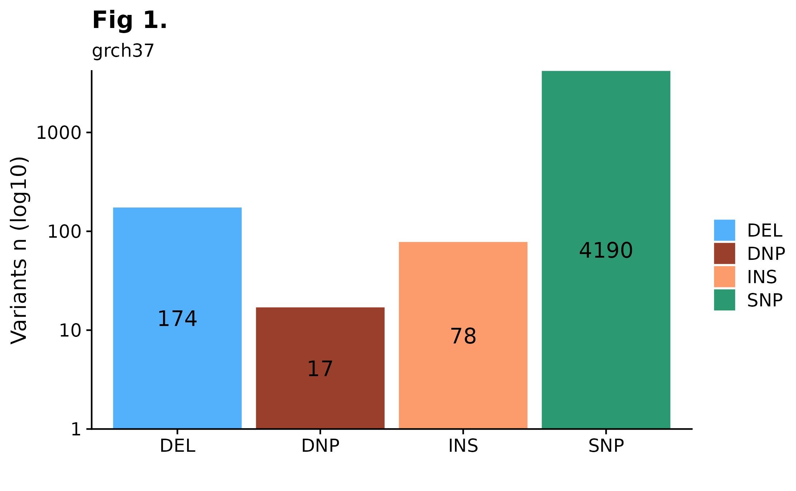
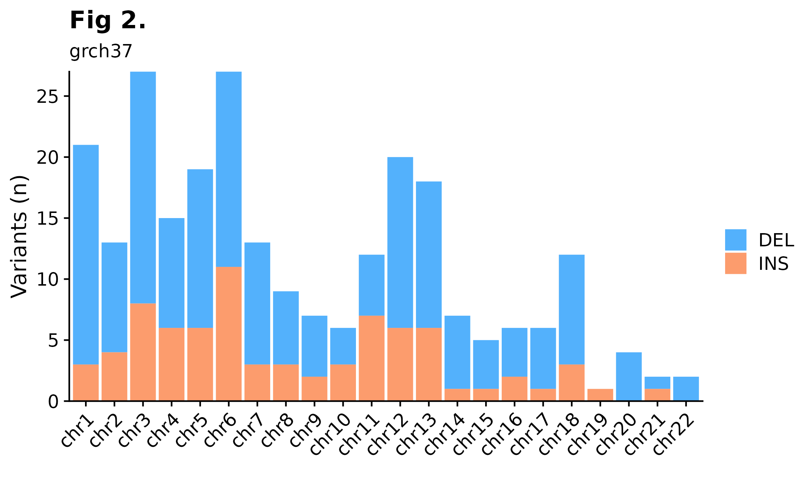
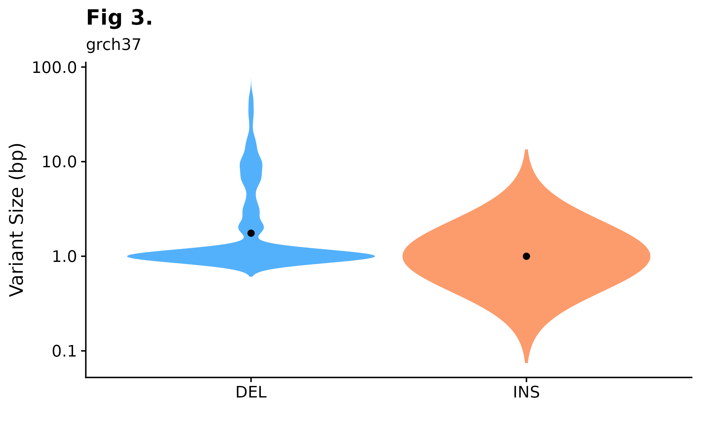
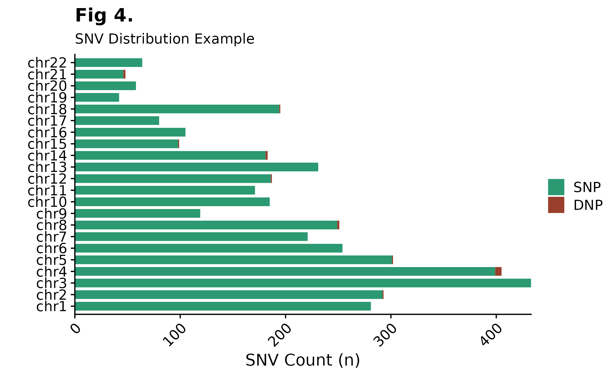
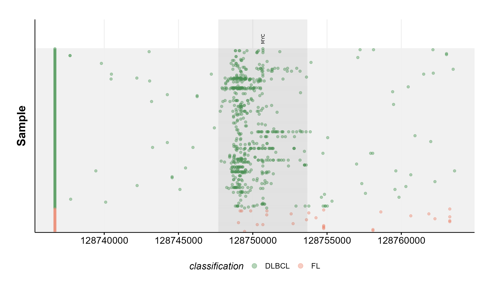
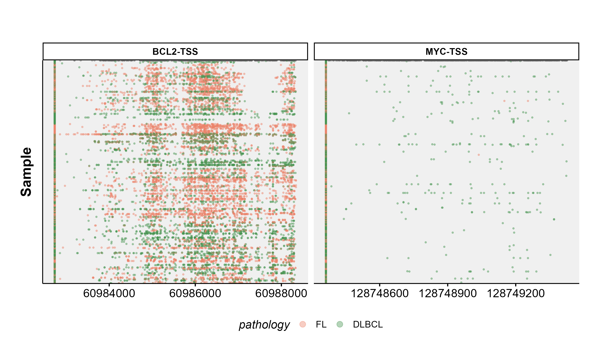
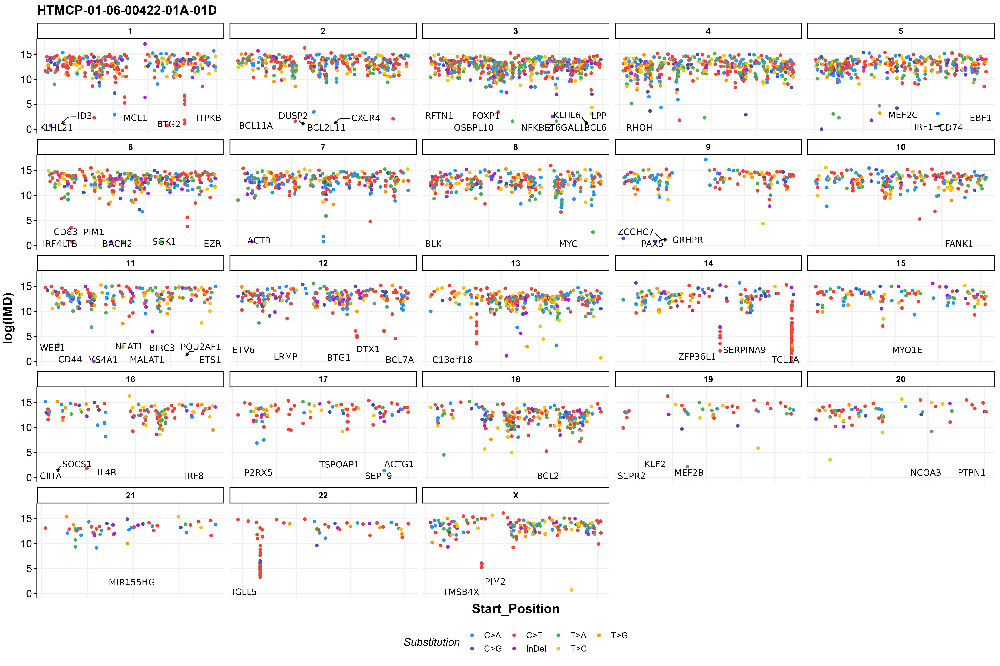
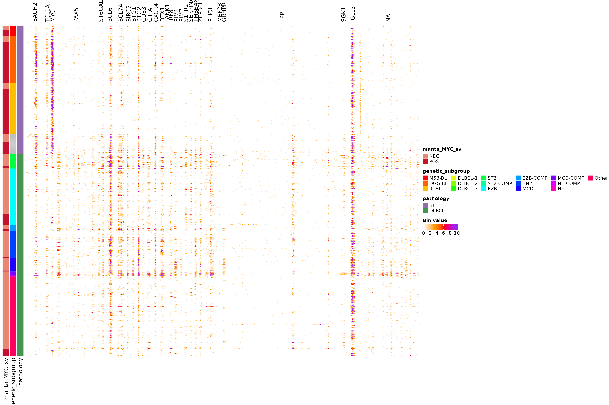
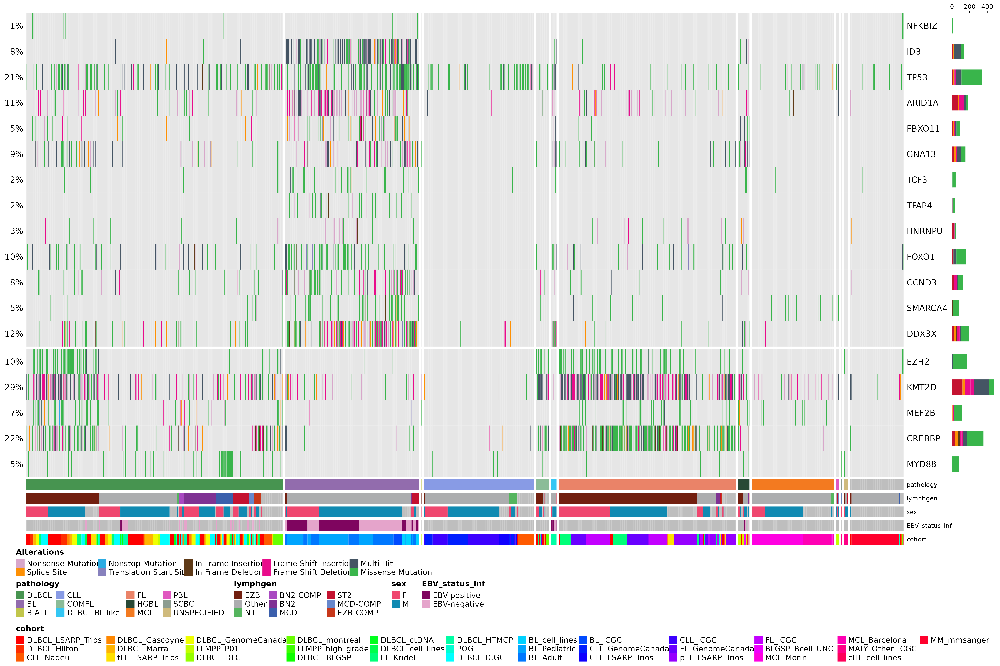
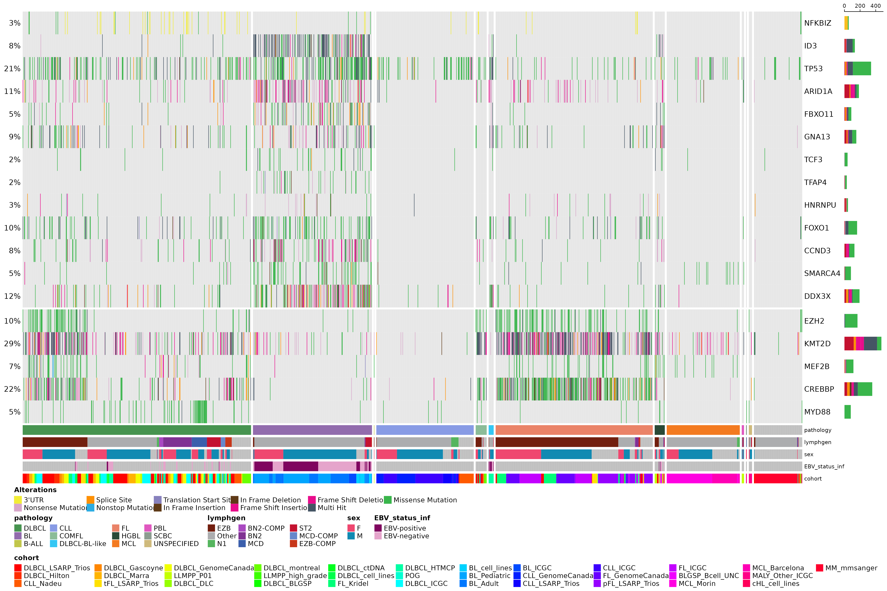

SSM Tutorial
ssm_tutorial.RmdSimple Somatic Mutations
This vignette demonstrates how to work with Simple Somatic Mutations (SSM) results within GAMBLR, all the way from obtaining results (in various ways), linking with metadata, performing data analysis and annotations to producing publication ready figures.
Metadata
First, lets start with retrieving metadata for all GAMBL samples with seqtype genome.
#get gambl metadata for all samples
this_metadata = get_gambl_metadata(seq_type_filter = "genome")
#subset metadata on a set of samples (samples classified as DLBCL for pathology)
dlbcl_metadata = dplyr::filter(this_metadata,
pathology == "DLBCL")Get SSM data
Based on the information available to the user, application, or downstream analysis, there are multiple ways to retrieve SSM data. For example, if the user knows the sample ID and is only interested in looking at SSM results for that particular sample, one can use get_ssm_by_sample. If multiple samples are to be queried, get_ssm_by_samples is recommended. The user can also use patient IDs for retrieving this data, in this case get_ssm_by_patients is available. In addition, the user can also restrict SSM calls to specific genomic regions with get_ssm_by_regions or get_ssm_by_region. Another possibility for returning coding SSM is to call get_coding_ssm, this function returns all coding SSMs from the GAMBL database in MAF-like format. If the user have an already subset metadata, the these_samples_metadata parameter can be used with most ssm functions to restrict the variants returned to the sample IDs in this data frame, handy! In this section we will be demonstrating how these functions can be used.
By Sample
Return SSMs for one specific sample with get_ssm_by_sample. In the example bellow, the augmented MAF is loaded (grch37, slims-3 and clustered) and variants with a minimum read support of 3 are kept. Basic column is set to TRUE, this means the function will only return the standard 45 columns out of all 116 columns present in the original MAF. In addition, the parameter these_genes is available for easy subset of variants to specific genomic loci.
#set sample ID
this_sample = "00-15201_tumorA"
#get_ssm_by_sample
this_sample_ssm = get_ssm_by_sample(this_sample_id = this_sample,
this_seq_type = "genome",
projection = "grch37")To return SSMs for multiple samples one can use get_ssm_by_samples. Note, this function wraps get_ssm_by_sample.
#set sample IDs
these_samples = c("HTMCP-01-06-00485-01A-01D",
"14-35472_tumorA",
"14-35472_tumorB")
#get_ssm_by_samples
these_samples_ssm = get_ssm_by_samples(these_sample_ids = these_samples,
projection = "grch37",
seq_type = "genome")By Patient
Return SSMs for a set of patients with get_ssm_by_patients.
#set patient IDs
these_patients = c("00-14595",
"00-15201",
"01-12047")
#get_ssm_by_patients
these_patients_ssm = get_ssm_by_patients(these_patient_ids = these_patients,
seq_type = "genome",
projection = "grch37")By Region
Return SSMs based on a specific region with get_ssm_by_region. In this example we are using gene_to_region to get genomic coordinates for a specific gene that will be called by get_ssm_by_region.
#get region
myc_region = gene_to_region(gene_symbol = "MYC",
return_as = "region")
#get all SSMs that are residing in the defined MYC region
myc_ssm = get_ssm_by_region(region = myc_region,
projection = "grch37",
seq_type = "genome")For multiple regions, refer to get_ssm_by_regions. In this example we are returning SSMs for all ASHM regions (hyper mutated) across all samples.
#convert regions to bed format
my_bed = gene_to_region(gene_symbol = c("MYC", "CD58"), return_as = "bed")
#get ssm for all ashm regions
bed_ssm = get_ssm_by_regions(regions_bed = my_bed,
projection = "grch37",
seq_type = "genome")## [1] "1:117057157-117113661" "8:128747680-128753674"Coding SSM
Lastly, another way to retrieve SSMs is to call get_coding_ssm. This function returns coding SSMs for any given sample. This function is a convenient option for anyone interested in plotting coding mutations. Convenient filtering parameters are included in this function for easy and straight-forward subset to specific pathologist, cohorts, and sample IDs. If these parameters are not called, coding SSMs will be returned for all samples. In the example bellow, we are using a metadata subset (DLBCL cases) for retrieving coding ssm.
#create metadata subset
my_sample_metadata = get_gambl_metadata(seq_type_filter = "genome") %>%
dplyr::filter(pathology == "DLBCL")
#get SSMs for all samples in metadata subset
all_coding_ssm = get_coding_ssm(these_samples_metadata = my_sample_metadata,
projection = "grch37",
seq_type = "genome")Annotating SSMs
In this section we are exploring functions that can be used to annotate SSMs that were retrieved in the previous section.
Blacklist
Annotate and auto-drop a MAF data frame with existing blacklists to remove variants that would be dropped during the merge process with annotate_blacklist_ssm. This function returns a MAF format data frame with two new columns, indicating the number of occurrences of each variant in the two blacklists. Note that there are a collection of parameters to this function to improve flexibility for many applications, such as return_blacklist (returns the used blacklist to the vector given the function, or printed to terminal if blank). For returning variants that would be dropped, one can specify invert = TRUE, please use with caution, this is most likely the opposite of what you want from this function. Lastly, the minimum count from one of the blacklists to drop a variant is specified with drop_threshold = 4. This function also, conveniently lets you know how many variants that were dropped in the annotation process.
#annotate ssm calls (all coding SSMs)
deblacklisted_ssm = annotate_ssm_blacklist(mutations_df = all_coding_ssm,
genome_build = "grch37",
seq_type = "genome")Drivers
Another useful way to annotate SSMs is with annotate_driver_ssm. This function indicates what rows (mutations) are putative driver mutations. For this example, we are annotating the single-sample MAF file that got returned with get_ssm_by_sample. This function can also take additional optional parameters to restrict the annotations to specific lymphoma types and known driver genes.
#annotate sample-level maf with putative driver mutations
driver_ssm = annotate_driver_ssm(maf_df = this_sample_ssm,
lymphoma_type = c("DLBCL"))## [1] 14 45
## [1] 14 45Hotspots
Another way to annotate an incoming MAF with SSMs is to call annotate_hotspots. This function annotates MAF-like data frame with a hot_spot column indicating recurrent mutations. The function takes the following parameters; mutation_maf - which is expecting a data frame in MAF-like format, recurrence_min - minimum number of recurrences for mutation to be included (default is 5), analysis_base - base name for hot spot output directory and p_thresh - P value threshold, default is 0.05. In this example, we are querying the MAF that was returned from the one-sample (get_ssm_by_sample).
#annotate mutational hotspots
this_sample_ssm_hot = annotate_hotspots(mutation_maf = this_sample_ssm,
recurrence_min = 5,
p_thresh = 0.05,
analysis_base = c("FL--DLBCL"))Review Hotspots
Returned hotspots can also be further reviewed with review_hotspots. This function expects an MAF that has already been annotated with annotate_hotspots.
#review hotspots
this_sample_ssm_hot_rev = review_hotspots(annotated_maf = this_sample_ssm_hot,
genes_of_interest = "MYD88",
genome_build = "grch37")Custom Track (UCSC)
Lastly, we can also transform the annotated MAF into a custom track file for visualization on th UCSC genome browser. This can be achieved with the function maf_to_custum_track.
#transform the annotated maf into a custom track for UCSC genome browser interrogation
ucsc_customtrack = maf_to_custom_track(maf_data = this_sample_ssm_hot_rev,
as_bigbed = FALSE,
as_biglolly = FALSE,
output_file = "this_sample_custom_track.bed",
track_name = "GAMBL Mutations",
track_description = "Mutations from GAMBL")SSM Visualization
Variant Counts
Interested in how many variants are present in a given sample? A quick way to overview such information would be to call fancy_svbar on a given sample ID. This function returns a bar plot visualizing SVs or SSMs. A variety of sub-setting options are also available. Such as chromosome selection and variant types to be included in plot. In the example bellow, we are looking at genome-wide SSMs for one selected sample.
#get ssm data for one sample
this_sample_ssm = get_ssm_by_sample(this_sample_id = "HTMCP-01-06-00422-01A-01D",
this_seq_type = "genome",
projection = "grch37",
augmented = TRUE)
fancy_v_count(maf_data = this_sample_ssm,
ssm = TRUE,
log10_y = TRUE,
from_flatfile = TRUE,
use_augmented_maf = TRUE,
variant_select = c("DEL", "DNP", "INS", "SNP"),
snp_colours = c("SNP" = "#2B9971", "DNP" = "#993F2B"),
plot_subtitle = "grch37",
plot_title = "Fig 1.",
chr_select = paste0("chr", c(1:22)))
Variant Counts Per Chromosome.
Sometimes it can be useful to overview variant distributions across the complete genomic landscape. To do so, one could call fancy_v_chrcount with sample ID. Optional arguments for sub-setting your data are available (see parameter descriptions for more information). In the following example we’re plotting SSM counts for all autosomes. One can also call add_qc_metric to add a second y-axis annotating mean corrected coverage for the selected sample.
fancy_v_chrcount(maf_data = this_sample_ssm,
plot_subtitle = "grch37",
plot_title = "Fig 2.",
y_interval = 5,
projection = "grch37",
min_vaf = 4,
chr_select = paste0("chr", c(1:22)),
ssm = TRUE,
coding_only = FALSE)
Variant Size Distributions
A useful way to visualize variant size distributions is to call fancy_v_sizedis to generate a violin plot showing variant size distributions (sample-level) across selected contigs (per default chr1-22). Optional parameters to sub-set data to include only coding regions are also available for this function, as well as to plot SVs by setting ssm = FALSE.
fancy_v_sizedis(maf_data = this_sample_ssm,
ssm = TRUE,
plot_trim = FALSE,
log_10 = TRUE,
scale_value = "width",
plot_title = "Fig 3.",
plot_subtitle = "grch37",
chr_select = paste0("chr", c(1:22)))
Single Nucleotide Variants Chromosome Distributions
Curious to see how SNVs are distributed across specific chromosomes? For this purpose fancy_snv_chrdistplot was developed. This function takes a sample ID and retrieves SNV information (using assign_cn_to_ssm) and plots variants in an ideogram dependent manner. Similarly to other fanxy_x_plot functions, a selection of parameters are available for data sub-setting and plot customization. For example, by calling the include_dnp, DNP counts will be added to each bar.
fancy_snv_chrdistplot(maf_data = this_sample_ssm,
plot_subtitle = "SNV Distribution Example",
plot_title = "Fig 4.",
chr_select = paste0("chr", c(1:22)),
include_dnp = TRUE)
Forest Plot
The prettyForestPlot function is used to compare mutation frequencies for a set of genes between two groups. In this example, pathology is set to FL and DLBCL (the two groups to be compared). Next, to get coding mutations for the selected samples, get_coding_ssm is called with limit_samples parameter, giving it the sample id column from the recently subset metadata. This function returns two types of plot (box plot and forest plot), the user can either view them separately or arranged on the same grob (showed in this example).
metadata_fl_dlbcl = get_gambl_metadata() %>%
dplyr::filter(pairing_status == "matched") %>%
dplyr::filter(consensus_pathology %in% c("FL", "DLBCL"))
maf_fl_dlbcl_coding = get_coding_ssm(limit_samples = metadata_fl_dlbcl$sample_id,
basic_columns = TRUE,
seq_type = "genome")
forest_plot = prettyForestPlot(maf = maf_fl_dlbcl_coding,
metadata = metadata_fl_dlbcl,
genes = c("ATP6V1B2", "EZH2", "TNFRSF14", "RRAGC"),
comparison_column = "consensus_pathology",
comparison_values = c("DLBCL", "FL"),
separate_hotspots = FALSE,
comparison_name = "FL vs DLBCL")
forest_plot$arranged
Rainbow Plots
The ashm_rainbow_plot allows the user to plot all mutations in a region, ordered and coloured by defined metadata columns. This function also has convenient parameters for highlighting specific regions within the larger defined region. For example, here we are looking at mutations withing MYC, the plot is showing 10K bases upstream and downstream of MYC, with MYC highlighted. Samples are plotted along the y-axis and genomic positions are in respect to the x-axis. On this example, samples are colour-coded based on their pathology status.
#set region for the plot to highlight.
mybed = data.frame(start = 128747680,
end = 128753674,
name = "MYC")
#full region to be plotted.
region = "chr8:128737680-128763674"
#get gambl metadata for all FL and DLBCL samples.
fl_dlbcl_metadata = get_gambl_metadata() %>%
dplyr::filter(pathology %in% c("FL", "DLBCL"))
#get SSm data for the specified region.
my_mutations = get_ssm_by_region(region = region)
#construct plot
ashm_rainbow_plot(mutations_maf = my_mutations,
drop_unmutated = TRUE,
metadata = fl_dlbcl_metadata,
hide_ids = TRUE,
bed = mybed,
region = region,
classification_column = "pathology",
custom_colours = c("FL" = "#EA8368", "DLBCL" = "#479450"))
If you are in fact interested in plotting multi-panel overview of hypermutations in regions of interest across many samples. You should try out ashm_multi_rainbow_plot.
#construct a multi-panel ashm rainbow plot
ashm_multi_rainbow_plot(custom_colours = get_gambl_colours("pathology"),
metadata = fl_dlbcl_metadata,
classification_column = "pathology",
seq_type = "genome",
verbose = FALSE,
regions_to_display = c("BCL2-TSS", "MYC-TSS"))
Rainfall Plot
This plotting function is available for plotting one or multiple samples and takes either an already loaded MAF data frame or a MAF path. If none are supplied the function will get ssm data using one of the functions available in GAMBLR. There are also other convenient parameters for further customizing the returned plot. For example, we can label ASHM genes (label_ashm_genes = TRUE), subset to specific chromosomes, zoom in to regions of interest. If plot is restricted to specific chromosomes or zoomed in to a region, we can also add SV labels, with the labe_sv = TRUE. In this example, we are looking at one sample (HTMCP-01-06-0042-01A-01D), all chromosomes with ASHM genes labeled.
#build plot
prettyRainfallPlot(this_sample_id = "HTMCP-01-06-00422-01A-01D",
seq_type = "genome",
projection = "grch37",
label_ashm_genes = TRUE)
Lollipop Plot
The function pretty_lollipop_plot is perfect for creating an appealing, flexible and interactive HTML-style lollipop plot from mutational data using a modified version of g3Lollipop function from g3viz package. This function only takes for parameters; maf_df which is the data frame containing the mutations to be plotted. gene this parameter controls what gene to plot mutations for. Lastly, plot_title lets you specify the name of the plot and with plot_theme you can specify the plot theme. Please note that in order for this function to run, you must first installed the forked version of g3viz.
#get metadata (Fl and DLBCL) with pairing status matched
metadata = get_gambl_metadata() %>%
dplyr::filter(pairing_status == "matched") %>%
dplyr::filter(consensus_pathology %in% c("FL", "DLBCL"))
#get maf data for returned samples
maf = get_coding_ssm(limit_samples = metadata$sample_id,
basic_columns = TRUE,
seq_type = "genome")
#construct pretty_lollipop_plot.
pretty_lollipop_plot(maf_df = maf,
gene = "MYC",
plot_title = "Mutation data for MYC",
plot_theme = "nature2")Mutation Frequency Bin Matrix
get_mutation_frequency_bin_matrix counts the number of mutations in a sliding window across a region for all samples (in the provided metadata parameter) and clusters the data.
#load metadata.
dlbcl_bl_meta = get_gambl_metadata() %>%
dplyr::filter(pathology %in% c("DLBCL",
"BL")) #subset on specific pathology.
#bring together all derived sample-level results from many GAMBL pipelines.
dlbcl_bl_meta = collate_results(join_with_full_metadata = TRUE,
these_samples_metadata = dlbcl_bl_meta) %>%
dplyr::filter(genetic_subgroup != "0")## /projects/nhl_meta_analysis_scratch/gambl/results_local/shared/gambl_genome_results.tsv
#get ashm regions (grch37) and filter out a set of genes.
some_regions = GAMBLR.data::somatic_hypermutation_locations_GRCh37_v_latest %>%
dplyr::filter(!gene %in% c("BCL11A", "CD44", "CD74", "IRF1", "IRF4",
"PTPN1", "KLHL6", "ZCCHC7", "ITPKB", "IL4R",
"NCOA3", "MYO1E", "ETV6", "FOXP1", "MEF2C",
"MS4A1", "SEPT9", "P2RX5", "BCL2L11", "POU2AF1",
"RFTN1", "C13orf18", "MIR155HG", "EBF1", "LRMP",
"BLK", "NFKBIZ", "BCL2")) %>% select(1:4)
#reorder factor levels of genetic subgroups.
some_regions$gene = factor(some_regions$gene,
levels = c("BACH2", "TCL1A", "MYC", "PAX5",
"ST6GAL1", "BCL6", "BCL7A", "BIRC3",
"BTG1", "BTG2", "CD83", "CIITA",
"CXCR4", "DTX1", "FANK1", "IRF8",
"PIM1", "PIM2", "S1PR2", "SERPINA9",
"TMSB4X", "ZFP36L1", "RHOH", "MEF2B",
"GRHPR", "LPP", "SGK1", "IGLL5"))
#reorder factor levels of genetic subgroups.
dlbcl_bl_meta$genetic_subgroup = factor(dlbcl_bl_meta$genetic_subgroup,
levels = c("M53-BL", "DGG-BL",
"IC-BL", "DLBCL-1",
"DLBCL-2", "DLBCL-3",
"ST2", "ST2-COMP",
"EZB", "EZB-COMP",
"BN2", "MCD",
"MCD-COMP", "N1-COMP",
"N1", "Other"))
get_mutation_frequency_bin_matrix(these_samples_metadata = dlbcl_bl_meta,
regions_df = some_regions,
min_bin_recurrence = 5,
region_fontsize = 12,
window_size = 1000,
slide_by = 500,
orientation = "sample_rows",
min_count_per_bin = 1,
sortByColumns = c("pathology",
"genetic_subgroup",
"manta_MYC_sv"),
metadataColumns = c("manta_MYC_sv",
"genetic_subgroup",
"pathology"))
Oncoplots
Commonly, we will want to generate visualizations that only show genes deemed relevant for a given malignancy (and above some frequency threshold). For this purpose we have prettyOncoplot available. In the example bellow, we are looking at all coding SSM (genome samples) and the relevant genes for two malignancies (BL and DLBCL). This plotting function has a large collection of parameters that are available for further customization and manipulation of the returned plot. Please refer to the documentation for a complete explanation of each parameter.
# Load the master merged MAF (coding only). It's usually more efficient to do this than to try to add filters to this query. Instead, just filter the data afterward
maf_data = get_coding_ssm(seq_type = "genome")
maf_metadata = get_gambl_metadata()
maf = read.maf(maf_data, clinicalData = maf_metadata)## -Validating
## --Removed 1078 duplicated variants
## -Silent variants: 65357
## -Summarizing
## --Possible FLAGS among top ten genes:
## TTN
## -Processing clinical data
## -Finished in 28.4s elapsed (57.4s cpu)
#define some genes of interest
bl_genes = c("NFKBIZ", "ID3", "TP53", "ARID1A", "FBXO11",
"GNA13", "TCF3", "TFAP4", "HNRNPU", "FOXO1",
"CCND3", "SMARCA4", "DDX3X")
dlbcl_genes = c("EZH2", "KMT2D", "MEF2B", "CREBBP", "MYD88")
genes = c(bl_genes, dlbcl_genes)
#define gene groups
gene_groups = c(rep("BL", length(bl_genes)), rep("DLBCL", length(dlbcl_genes)))
names(gene_groups) = genes
#filter metadata
maf_metadata = dplyr::filter(maf_metadata,!lymphgen %in% c("COMPOSITE"))
#convert metadata column into factor
maf_metadata$pathology = as.factor(maf_metadata$pathology)
#define order of factors for selected metadata column
maf_metadata$pathology = factor(maf_metadata$pathology,
levels = c("DLBCL", "BL",
"B-ALL", "CLL",
"COMFL", "DLBCL-BL-like",
"FL", "HGBL",
"MCL", "PBL",
"SCBC", "UNSPECIFIED"))
maf_metadata = with(maf_metadata, maf_metadata[order(pathology),])
#create prettyOncoplot
prettyOncoplot(maftools_obj = maf,
genes = genes,
these_samples_metadata = maf_metadata,
splitGeneGroups = gene_groups,
keepGeneOrder = TRUE,
splitColumnName = "pathology",
metadataBarHeight = 5,
metadataBarFontsize = 8,
fontSizeGene = 11,
metadataColumns = c("pathology", "lymphgen", "sex", "EBV_status_inf", "cohort"),
sortByColumns = c("pathology", "lymphgen", "sex", "EBV_status_inf", "cohort"))## [1] "numcases: 1646"
## [1] "numgenes: 18"
As previous stated, prettyOncoplot has many parameters that can be called to further customize the plot and aggregate the data that are to be plotted. In reality, if all features of this plotting functions were to be demonstrated, a dedicated vignette for this purpose might be the way to go. Even so, here is another example were we include non coding regions (3’ UTR, NFKBIZ).
#get SSM for NFKBIZ UTR region
nfkbiz_utr_region = "chr3:101,578,185-101,579,902"
nfkbiz_ssm = get_ssm_by_region(region = nfkbiz_utr_region, seq_type = "genome", projection = "grch37", basic_columns = TRUE)
#rbind nfkbiz SSM with big mutation data frame
maf_data = rbind(maf_data, nfkbiz_ssm)
maf = read.maf(maf_data, clinicalData = maf_metadata)## -Validating
## --Removed 1079 duplicated variants
## -Silent variants: 65404
## -Summarizing
## --Possible FLAGS among top ten genes:
## TTN
## -Processing clinical data
## -Finished in 28.3s elapsed (54.3s cpu)
#create prettyOncoplot
prettyOncoplot(maftools_obj = maf,
genes = genes,
these_samples_metadata = maf_metadata,
include_noncoding=list("NFKBIZ" = c("3'UTR")),
splitGeneGroups = gene_groups,
keepGeneOrder = TRUE,
splitColumnName = "pathology",
metadataBarHeight = 5,
metadataBarFontsize = 8,
fontSizeGene = 11,
metadataColumns = c("pathology", "lymphgen", "sex", "EBV_status_inf", "cohort"),
sortByColumns = c("pathology", "lymphgen", "sex", "EBV_status_inf", "cohort"))## [1] "numcases: 1646"
## [1] "numgenes: 18"